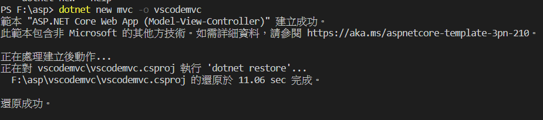
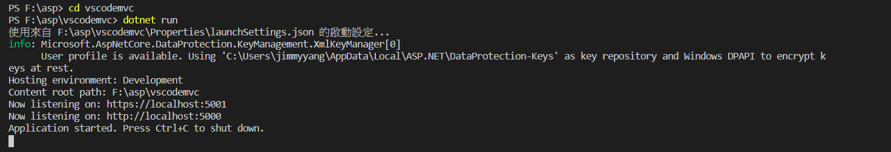
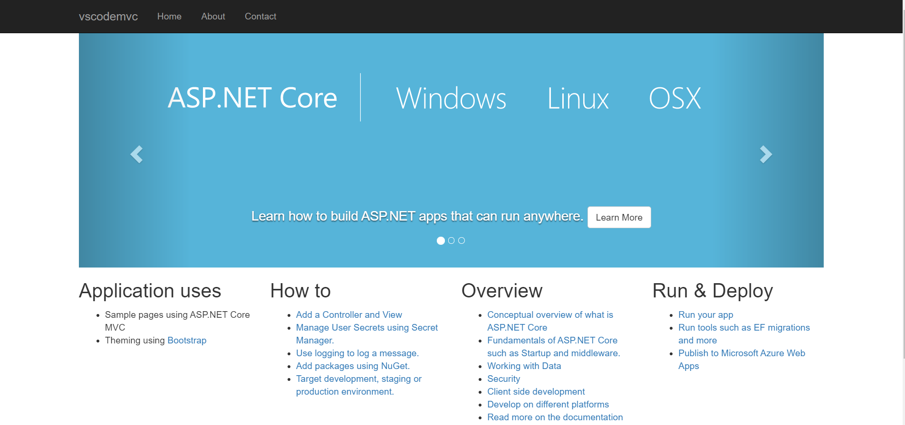
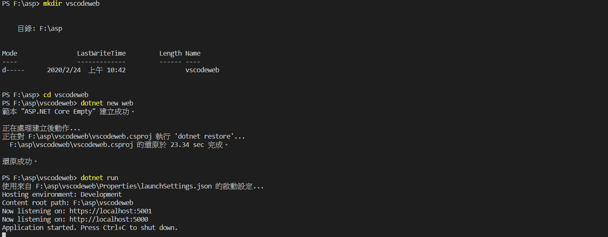
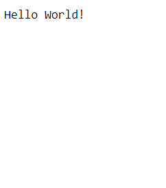

前言
因為工作的關係，現在多使用 PHP+MSSQL 來開發網站，但前一份工作卻是用 Visual Studio 2015 來開發web網站，
現在有 visual studio code出現，開始重新學習 c# 。
目前還是以我擅長的 web網站 及 挑戰 MVC的方尚，至於WPF就等之後吧。
.Net Core 網站開發 101 ，這個文章應該是我目前主要參考的文章。
我自己建立一個 asp 資料夾來存放我的專案。
開啟vscode ，然後再打開asp資料夾。
建立 MVC 專案
1 | // 建立 vscodemvc 專案 |
shell 畫面


然後 https://localhost:5001/ 就會發現網站開始執行了。
網站畫面

建立 WEB 專案
我下
1 | // 建立 vscodeweb 資料夾 |
web專案畫面會出現 Hello World文字。
shell 畫面

然後 https://localhost:5001/ 就會發現網站開始執行了。
網站畫面，只會出現 Hello World!
